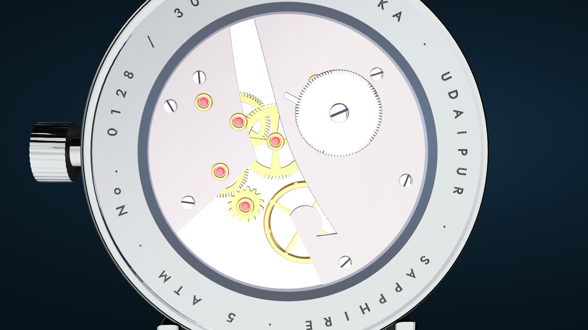
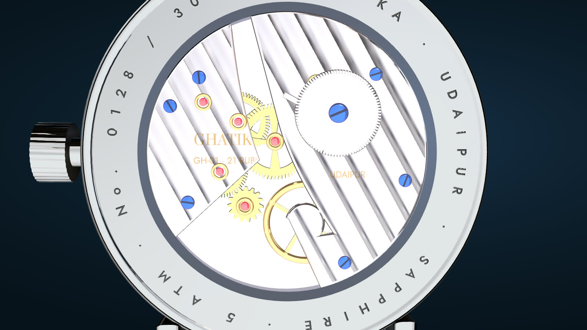

Thirty-eight days, one pair of hands.
Our watchmakers don’t work on a line. One person finishes, assembles, regulates and cases your watch, then signs it inside the back.
From a box of parts to a watch.
The days below are for a Prahar in steel. Gold cases add three days of polishing; a moon disc adds two days of painting.
- 01
Inspect every part
Each of the 142 components of calibre GH-01 is checked under a 10× loupe. Anything with a burr or a scratch goes back. About one part in thirty does.
2days
- 02
Bevel the bridges
Every edge is filed by hand to a 45° chamfer, then polished with diamond paste on a stick of gentian wood until it is a mirror. Inward angles can only be done by hand: no machine can reach them.
9days
- 03
Cut the dial
120 passes on the rose engine for a lehariya dial, then a colour bath, nine coats of lacquer, and printing by pad, one colour at a time.
8days
- 04
Assemble the calibre
Gear train, barrel, escapement, balance. Oiled at 34 points with five different lubricants, each applied with a needle finer than a hair.
7days
- 05
Regulate in five positions
Dial up, dial down, crown up, crown down, crown left. At 8° and 38°. Until the watch keeps time within −2 and +4 seconds a day.
6days
- 06
Case, then a 72-hour run
Dial and hands go on last. The watch is cased, pressure-tested to 50 metres and left running on a winding machine for three days before it may leave.
4days
- 07
Sign and number
The watchmaker engraves their initials under the sapphire, and the caseback ring receives its number, out of three hundred for the year.
2days
What finishing does.
The same calibre, before and after nine days at the bench. Drag the handle, or use the arrow keys on it.


BeforeAfter · 9 daysCôtes de Genève
Stripes that catch light
Cut with a rotating wooden peg at 2.2 mm pitch. They also trap dust before it can reach the train.
Anglage
Four hours of edges
A polished bevel on every bridge. The inward corners are the test of a watchmaker: we count them, there are eleven.
Blued screws
Heated to 290 °C
Polished screws are heated on a brass tray until they turn cornflower blue, then quenched. It protects the steel as well as colouring it.
The bench
Four watchmakers, one dial-maker and a rose engine older than independence. Visit on a Thursday to watch it run.
Rose engine and dials
Mehul Soni
Trained in Pforzheim, came home to Udaipur in 2018. Cuts four dials on a good day.
Head of regulation
Kavya Paliwal
Regulates every watch we make. Her rule: if it isn’t within four seconds, it isn’t finished.
Finishing
Rafiq Khan
Third-generation jeweller. Taught the whole bench how to polish an inward angle.
Service and repairs
Anjali Purohit
Looks after every Ghatika that comes back to us, and answers the letters about them.